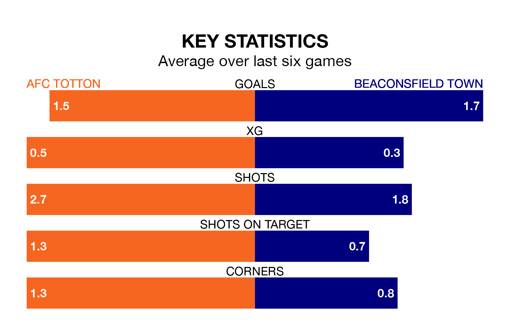

AFC Totton host Beaconsfield Town in Saturday's match at the Testwood Stadium looking to bounce back from defeat last time out in the Southern League Premier South.
Totton, who sit fourth in the league after 31 games, fell to a 2-0 away defeat to Chesham United on March 16.
They face a Beaconsfield side who also lost their last match, a 4-3 defeat to Dorchester Town, and who sit 13th in the table.
With 59 goals in 31 games so far this season, Totton are scoring more than average in the league with 1.9 goals per game. And they are conceding fewer than average, letting in 38 goals at a rate of 1.2 per game.
Beaconsfield, meanwhile, are below average scorers, with 1.6 goals per game, compared to a league average of 1.7. They have conceded 1.8 goals per game.
The hosts are in reasonable form in the Southern League Premier South, with three wins and two draws from their last six games.
With three wins and a draw over that period, Town's form is slightly worse – they have taken 10 points from 18, compared to Totton's 11.
Updated: 10:19 (UTC), 22/03/24